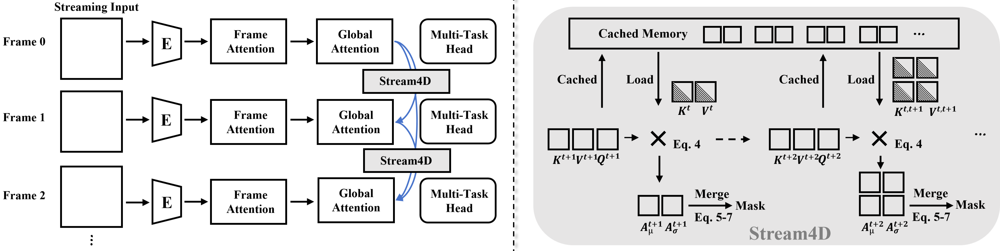

Paper Analysis
01 · Motion Segmentation Is Not Semantic Labeling
静态多视图重建把不同帧看作同一个场景在不同相机下的观测。若一个区域本身在运动，跨帧差异就同时来自相机和物体；把这部分历史当作稳定对应，可能扰动位姿并积累多份表面。Stream4D 针对的是这种动态干扰，而不是预测“人、车、墙”等语义类别。
输入为按时间到来的 RGB 帧，目标输出包括二值动态掩码、相机内外参与静态点云。预训练骨干负责视觉编码和几何预测，新增模块在推理时分析注意力、生成掩码并干预缓存。论文强调不微调骨干、不增加训练数据；它不是一个新的端到端训练语义重建模型。
因果表示在第 t 帧只能使用当前与过去的信息。KV cache 保存先前层内计算过的 key/value，避免重新编码全部历史。缓存存在并不等于缓存内容可靠：错误的动态对应也可能长期参与后续注意力。本文的切入点正是改变这条读取路径。
本文指 arXiv:2610.31320 的重建工作，首次公开为 2026-10-22，阅读 v1；不要与同名的扩散视频生成论文混淆。
Paper Analysis
02 · Following the Original Pipeline

Wei Zhang et al. · Original figure, unmodified · Manuscript: CC BY-NC-ND; arXiv deposit: non-exclusive distribution license · Paper & Caption ↗
原图左侧是连续帧经过编码器、帧内注意力、跨帧注意力及多任务预测头的过程。右侧展开历史缓存：当前 query 与历史 key 产生注意力，统计量合并成显著图，显著图再转成 mask。mask 不只用于最终点云着色，而是用于修改之后的历史 key。
按正文公式，当前层的 Aₜ = softmax(Qₜ[K₁,…,Kₜ₋₁]ᵀ/√d)。对于当前 token，作者在选择的历史集合中统计注意力的均值 μ 与离散程度 σ；其经验观察是运动区域常有较低均值、较高变化。归一化后的显著分数为 Sₜˡ = (1−μ̄ₜˡ)⊙σ̄ₜˡ，再跨层加权求和。
这里的统计量是运动线索，不是运动真值或类别后验。遮挡、重复纹理和视角改变也会影响注意力。正文把 σ 与 variance 的描述交替使用，未完整给出历史集合选择、具体统计轴和归一化实现；复现时需要确认，而不能仅从符号补写算法。
层间权重偏向中间层，但同时使用浅、中、深层；这与直接复制离线模型某一层的注意力不同。原图是概括性流程，公式编号与图内标注不完全对应，具体机制以正文公式 4–9 为准。
Paper Analysis
03 · Depth Cues and Their Assumptions
第一个深度线索是前景先验：S_prior = sigmoid[β(Quantile(Dₜ,q)−Dₜ)]。Dₜ 是预测深度，分位点给出相对远近阈值，β 控制过渡陡峭程度。比该分位点更近的区域得分更高。它表达“近处更可能运动”的经验偏置，并不意味着静止的近处物体应当被排除。
第二个线索在时间窗口中平均 |Dₜ−Dᵢ| 并归一化。随后将注意力、前景深度与深度变化按经验系数融合，对显著图做过去到当前的时间平均、Otsu 阈值化及形态学细化，得到二值 mask。Otsu 是根据分数分布自动选阈值；形态学处理用于修补小孔洞和孤立区域。
正文公式 6 直接相减深度图，没有显式写出相机运动补偿、重投影或尺度对齐。因此不能把这个差值解释成纯物体运动；相机移动同样会改变固定像素位置上的深度。时间平滑也有类似问题：若不对齐，快速运动可能产生拖尾。这些是由公式可见的适用限制，并非本地复现实验发现。
这也限定了语义的潜在角色：语义或实例边界也许可以改善 mask 的空间一致性，但“属于某类别”不能替代运动证据。停着的汽车和行驶的汽车不应因类别相同而采取同样的历史抑制。
Paper Analysis
04 · What Soft Key Masking Actually Changes
正文公式 8 是 K̃ᵢ = Kᵢ⊙(1−γMᵢ)，其中 Mᵢ 对动态 token 为 1，对静态为 0，0<γ<1。value 保持不变；mask 随历史保存。作者在前几个 decoder 层应用这个处理，希望减少动态区域参与后续几何聚合。它不删除 token，也不直接保证显存减少。
需要区分作者意图与数学保证。令某 key 的原始 logit 为 z=qᵀk/√d，缩放后为 (1−γ)z。当 z>0 时打分下降；当 z<0 时反而向零上升。教学算例：只有两个 key，静态 logit 为 0，动态为 −2；γ=0.5 后动态变为 −1，其 softmax 权重由约 0.119 升到 0.269。因此“缩 key 必然抑制动态注意力”并不成立，整体效果应由实际注意力分布和实验支持。
若希望在控制其他 logits 不变时保证某项权重降低，可以向该项加入负的 logit bias；这只是独立分析提出的对照方案，不是 Stream4D 已实现的方法。它也不能自动解决掩码错误，或保证下游几何变好。
论文还写出静态区域的光度与几何一致性目标：置信度 Cₜ 与 (1−Mₜ) 乘到重投影误差上，并把高置信静态点加入地图。但“training-free”并未在本文中配套明确说明该 loss 是否用于测试时优化、优化哪些变量以及迭代次数。不能据此声称它训练了 memory，也不能把不微调网络等同于已经确认完全没有测试时优化。
当前帧掩码依赖注意力和预测深度，而缓存干预又用于后续预测；复现必须明确生成掩码、修改旧 key 与输出几何的时序，避免把图理解成无代价的同帧闭环。本次未找到可验证的作者代码入口，具体执行顺序仍以公开正文可确认部分为限。
Paper Analysis
05 · Segmentation and Pose Evidence
DAVIS 的 J_M 为区域 IoU 均值，越高越好；J_R 是 IoU recall，不是像素级召回。表 1 中带星号的 CUT3R、Stream3R、StreamVGGT 是作者增加分割能力后的适配实现，不能当作原方法本身原生输出 mask 的结果。作者称流式对照采用相同分辨率、预处理且不访问未来帧。
Stream4D 在 DAVIS-2016/2017/all 的 J_M 为 43.39/46.45/43.06，对应适配 StreamVGGT 为 34.91/37.33/33.20；改善分别为 8.48、9.12、9.86 个百分点。离线 VGGT4D 为 62.12/56.45/50.75，因此结论是改善了这些流式对照，而不是超过所有离线方法。
DyCheck 结果主要是位姿指标，下表数值均直接来自表 2，越低越好。与更强的流式 Stream3R 相比，三个指标有改善，但绝对差为 0.001、0.001、0.006；正文未报告方差，不能从百分比 推断稳定显著收益。论文没有在这张表中给出点云准确度、完整度或动态物体几何质量。
去重影主要由可视化支撑。只删除动态点也可能让静态地图看起来更干净，所以不能将画面改善直接等同于完整四维重建更好。本文结尾也将动态物体重建列为后续方向。
| Method | ATE ↓ | RTE ↓ | RRE ↓ |
|---|---|---|---|
| Stream3R | 0.015 | 0.018 | 0.545 |
| Stream4D | 0.014 | 0.017 | 0.539 |
| VGGT4D (offline) | 0.010 | 0.007 | 0.374 |
Paper Analysis
06 · Runtime and Missing Attribution
效率实验在单张 A100、512×384 输入下测试 10、20、50、100、200 帧。200 帧 Stream4D 总时间 93.1 秒，StreamVGGT 为 84.1 秒，额外约 10.7%。按总帧数除时间，前者约 2.15 帧/秒；这是本笔记计算的平均吞吐，不是首帧延迟，也不应宣传为常见 30 FPS 意义上的实时。
Easi3R 在 100 帧为 260 秒，并在到达 200 帧前 OOM。论文图注称其指数增长，正文称二次增长；这些词并不等价。对 Stream4D，10–200 帧的近线性曲线也不足以证明无限长序列的总计算严格线性或固定显存。若历史 cache 持续增长，全历史 attention 的开销仍需单独核对。
实验导言提到消融，但本次阅读的 v1 正文没有给出逐一去掉深度先验、时间平滑、soft key masking 的完整数值表；文中提及的更多附录可视化也未作为独立附录出现在该 HTML 中。因此已有结果不能把几何收益单独归因于 key 修改，更不能归因于语言语义。
Paper Analysis
07 · Implications for LingBot-Map
可借鉴的是反馈位置：辅助区域判断必须改变几何实际使用的历史，才能讨论其重建作用。Stream4D 在读取时修改 key；我们此前的语义方案在历史形成前融合特征。两者分别改变“怎样读旧信息”和“旧信息怎样被形成”，不宜合并成一个未经验证的贡献。
对 LingBot-Map 的直接适配障碍是表示粒度。近期密集图像 token 可以对应像素 mask，但旧帧压缩后的特殊 token 混合了多个区域，不能把二值像素 mask 直接乘到六个向量上，更不能把它们当作六个物体。若需要区域约束影响旧状态，应在密集信息聚合前应用，或建立经过验证的区域到摘要归属。
一个清楚的实验是保持缓存策略与总容量一致，比较原骨干、仅输出 mask、mask 改变密集历史读取、写入前语义融合。先分别测位姿、静态几何精度与完整度、动态 mask 质量和耗时，再判断收益在哪条路径上。这里是研究设计，不是已运行的结果。
这篇工作不能替我们证明语义必要性。它证明的研究方向更窄：运动相关的可靠性判断有可能使历史利用更稳健；语言对齐特征是否比纯几何或非语言视觉特征更有效，仍需要同预算对照。
Discussion
Reading Questions
Does Stream4D build an open-vocabulary semantic map?
不。它输出动态/静态掩码，没有语言对齐类别查询；动态判断与语义类别不是同一任务。
Does key scaling always suppress attention?
不。负 logit 乘以小于 1 的正数后会增大；正文的抑制意图需要结合实际打分和下游实验验证。
Does training-free establish a fully optimization-free pipeline?
不。正文同时给出静态一致性 loss，但没有明确其执行协议；不微调网络与不做测试时优化需要分别核对。
Can a pixel mask be applied directly to compressed special tokens?
通常不能。摘要 token 缺少一一对应的像素区域；需要在压缩前干预或显式建立并验证区域归属。
References
- Original Paper ↗
- Submission and Version History ↗
- Related Note: LingBot-Map ↗
- Related Note: Semantic Supervision ↗
One unmodified original figure is reproduced for focused scholarly commentary. The manuscript states CC BY-NC-ND; the arXiv deposit uses the non-exclusive distribution license. No broader reuse permission is implied. Results are author-reported; no local reproduction has been performed.
Verified on 2026-11-04. Paper results refer to the linked versions. Repository references were checked on this date.